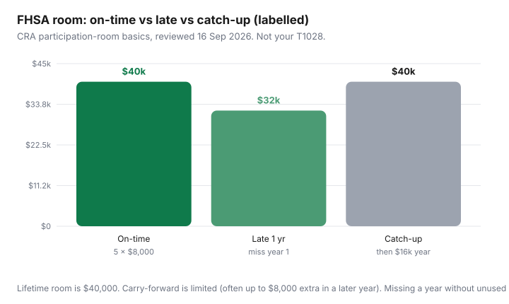

Housing · Canada
How to use a First Home Savings Account (FHSA) in Canada without leaving room on the table
An FHSA is not a vibe and it is not “free house money.” It is a CRA account with participation room, a lifetime cap, and a calendar. Households who open it in December, skip a year, or treat unused room as infinite leave tax refunds and down-payment cash on the table.
This is a Housing playbook for a 3–5 year buy timeline: room, deductions versus qualifying withdrawals, carry-forward traps, stacking with the Home Buyers’ Plan at a high level, and the historical note that CMHC’s First-Time Home Buyer Incentive (FTHBI) is closed to new applicants. It is not a stock-picking guide and not tax advice for your T1. Confirm canada.ca the week you contribute — Parliament and CRA forms change.
Disclosure: Brokerage/FHSA account offers and mortgage tools are offer types. Saving Optimizer may earn a commission if we later add partner links. We do not currently claim issuer partnerships. Shop fees yourself. This page works with a CRA account and any qualifying issuer.
Key takeaways
- Opening-year participation room is $8,000. Lifetime limit $40,000 (CRA FHSA pages, reviewed 16 Sep 2026). Over-contributing creates an excess-FHSA mess; do not round up from memory.
- Contributions can be deductible (subject to the lifetime deduction limit). Qualifying withdrawals for a first home can be tax-free. Those are two different moments — do not skip the qualifying-withdrawal conditions.
- Unused room can carry forward, commonly allowing up to $16,000 in a later year if you have unused room — still subject to the lifetime cap. Carry-forward is not unlimited.
- You can generally use an FHSA qualifying withdrawal and an HBP withdrawal (limit $60,000) for the same qualifying home if you meet each program’s conditions (CRA, reviewed 16 Sep 2026).
- FTHBI applications ended 21 March 2024, midnight ET; no new approvals after 31 March 2024 (CMHC). Do not budget as if shared-equity incentive is still open.
Participation room: $8,000 annual and $40,000 lifetime basics (verify at draft)
CRA’s participating-in-your-FHSA page (reviewed 16 Sep 2026): in the year you open your first FHSA, participation room is $8,000. Lifetime contributions you can deduct are capped at $40,000; RRSP-to-FHSA transfers reduce what you can deduct over your lifetime. After you file with Schedule 15, your participation-room statement shows up on the notice of assessment or Form T1028 for 2026.
Room is not “$8,000 because it is 2026.” If you have not opened an account, you are not accruing FHSA room the way unused TFSA room accrues for every adult year. That is the expensive myth. Open the account when you are a qualifying first-time home buyer under CRA’s definition, even if you will only put $500 in it this year — if the annual room otherwise vanishes from your plan.
Not tax advice: qualifying first-time home buyer status, residency, and the 15-year participation clock are CRA conditions. If you already owned a home, do not open an FHSA because a friend did. Read canada.ca or call CRA.
Deductible contributions vs tax-free qualifying withdrawals
Two engines:
- In: contributions (or eligible transfers) up to room. You may deduct them, which is the “RRSP-like” part. You can sometimes delay a deduction — a tactic for a higher-income year, not a reason to skip contributing.
- Out: a qualifying withdrawal for a qualifying home can be tax-free, which is the “TFSA-like” part. Non-qualifying withdrawals are a different, usually worse, tax event. The conditions (written agreement, occupancy timelines, first-time status at withdrawal) live on CRA’s withdrawal page. Skim them before you e-transfer a builder.
Growth inside the account is not taxed as you go, which is why a savings account FHSA and an invested FHSA are different products with the same room. Housing runway that you need in 18 months does not belong in something you would hate to sell in a dip. That is risk management, not a fund recommendation.
Carry-forward room and timing mistakes
Unused participation room can carry forward, and CRA examples show later-year room that is not always $8,000 — including cases above $8,000 when unused room exists, often illustrated up to $16,000, and cases below $8,000 when you are near the lifetime cap. The trap is waiting three years to “let room pile up” as if it were a TFSA. FHSA carry-forward is limited; the lifetime cap still binds; the participation period still runs.

Timing mistakes that show up in forums: opening in January of the purchase year and trying to stuff $40,000; transferring from an RRSP without understanding the deduction-limit interaction; making a non-qualifying withdrawal because the closing date slipped. Put the CRA occupancy and closing conditions next to the builder’s schedule.
Combining FHSA with HBP for the same purchase (high-level)
CRA is explicit: you can withdraw under the Home Buyers’ Plan from an RRSP and make a qualifying FHSA withdrawal for the same qualifying home if you meet each program’s conditions at each withdrawal. HBP limit is currently $60,000. HBP is a repayable RRSP withdrawal; FHSA qualifying withdrawals are not an HBP-style 15-year payback.
Budget 2024-style repayment relief: CRA’s HBP page (reviewed 16 Sep 2026) says temporary relief that defers the start of the 15-year repayment period was extended for participants making a first withdrawal between 1 January 2026 and 31 December 2028. Example given: first withdrawal in 2026, first repayment year 2031. That is a cash-flow fact for the years after you buy, not a reason to drain the RRSP if you need those deductions later. Personal Finance depth (which account to fill first in a 30-year plan) stops here; this page only keeps both tools on the closing worksheet.
Where FTHBI fits historically—and why it is closed to new applicants
CMHC’s First-Time Home Buyer Incentive was a shared-equity program, not an account. The public page still says it is no longer accepting applications. Deadline for new submissions: 21 March 2024, midnight ET. No new approvals after 31 March 2024. Existing approved borrowers were not the target of this closure the same way. If a blog or a salesperson still talks as if you can apply, they are reciting a dead PDF.
Replacements in the household toolkit are ordinary: FHSA, HBP, provincial land-transfer refunds where they exist (Ontario up to $4,000 first-time; Toronto municipal up to $4,475 — confirm), and GST/HST new-housing rebates when you buy new. None of those is FTHBI with a different logo.
Account shopping: fees and investment options at a high level
Shop the account like a chequing account that happens to have tax rules:
- Are there annual fees? Transfer-out fees if you leave?
- Can you hold a high-interest cash product for a 12–24 month closing, or only a trading roster you do not want?
- How ugly is a qualifying withdrawal operationally (forms, timelines)?
A 1% MER on money you will spend on closing in 14 months is a fee, not an investment philosophy. A brokerage promo is an offer type, not a reason to pick a platform you will hate at withdrawal time.
Year-by-year savings calendar for a 3–5 year buy timeline
| Year | Room to aim at | Housing task |
|---|---|---|
| 2026 | $8,000 if you open this year | Open the account; automate a monthly transfer; file Schedule 15 |
| 2027 | Up to $8,000 + any allowed carry-forward | Re-read qualifying-withdrawal conditions; keep cash vs invest split honest |
| 2028 | Same, watching the $40,000 lifetime | If buying this year, map HBP + FHSA forms to the closing date |
| 2029–30 | Remainder to $40,000 | Do not over-contribute “to be safe.” Excess FHSA amounts are their own penalty regime |
If the purchase is 18 months away and you have not opened the account, open it this week if you qualify — then put what you can inside room. The tax deduction is part of the down-payment math; spend the refund on the FHSA or a closing-cost sinking fund, not a sofa.
Sources & date stamps
- CRA, First Home Savings Account — participating, deductions, withdrawals (reviewed 16 Sep 2026): $8,000 opening-year room; $40,000 lifetime; T1028 / Schedule 15.
- CRA, Home Buyers’ Plan — $60,000 limit; same-home use with FHSA; 2026–2028 repayment-start relief example (reviewed 16 Sep 2026).
- CMHC, First-Time Home Buyer Incentive — applications closed 21 Mar 2024 midnight ET; no new approvals after 31 Mar 2024 (reviewed 16 Sep 2026).
Frequently asked questions
How much can I put in an FHSA in 2026?
Opening-year participation room is $8,000, with a $40,000 lifetime limit, per CRA pages reviewed 16 Sep 2026. Unused room can carry forward within limits (often illustrated up to $16,000 in a later year). Check your T1028; do not guess.
Is an FHSA withdrawal tax-free?
A qualifying withdrawal for a qualifying home can be. Non-qualifying withdrawals are taxed differently. Read CRA’s withdrawal conditions (agreement, occupancy, first-time status) before closing day.
Can I use the FHSA and the Home Buyers’ Plan together?
CRA says yes for the same qualifying home if you meet each program’s conditions. HBP is currently limited to $60,000 and must be repaid on its own schedule. This is not tax advice for your return.
Is the First-Time Home Buyer Incentive still available?
No for new applicants. CMHC stopped accepting applications at midnight ET on 21 March 2024. Do not budget as if shared-equity FTHBI is open.
Should I open an FHSA if I might buy next year?
If you qualify, unused opening-year room is the usual reason to open even with a short timeline. Keep money you need for closing in cash-like holdings. Confirm qualifying-withdrawal timing with CRA and your issuer.